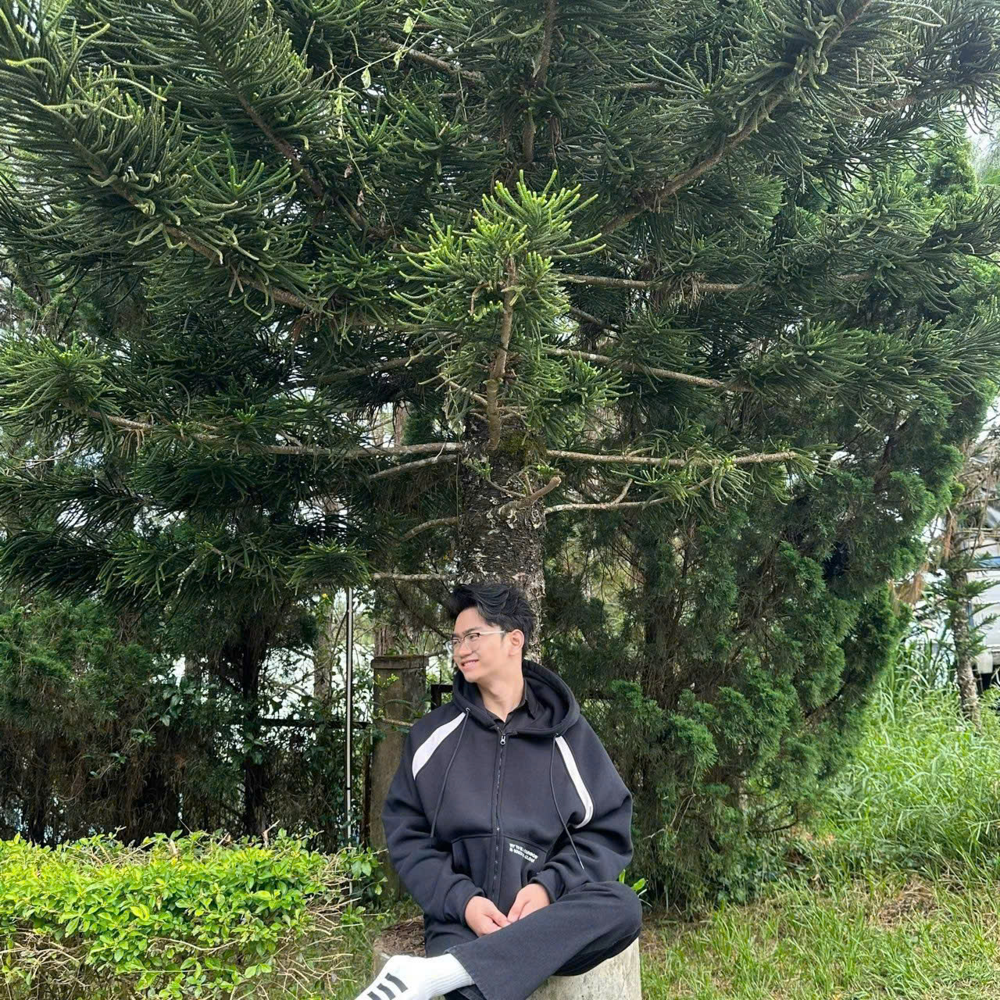

Programming
Rèn luyện tư duy lập trình, từng bước làm chủ Python và cách giải quyết vấn đề bằng code.
HELLO, WORLD! — WELCOME TO MY SPACE
Sinh viên Khoa học dữ liệu & Trí tuệ nhân tạo
Đang học hỏi, xây dựng và từng bước tạo nên phiên bản tốt hơn của chính mình.

01 / ABOUT ME
Xin chào, mình là Kiệt .
Hiện tại, mình đang theo học ngành Khoa học dữ liệu và AI tại UTH. Mình chọn con đường này vì muốn hiểu dữ liệu, làm chủ công nghệ và biến những ý tưởng thành sản phẩm có ích.
Mình tin rằng tiến bộ không đến từ một bước nhảy thật lớn, mà từ những lần kiên trì học thêm một điều mới mỗi ngày.
02 / WHAT I'M LEARNING
Rèn luyện tư duy lập trình, từng bước làm chủ Python và cách giải quyết vấn đề bằng code.
Khám phá cách dữ liệu được thu thập, xử lý, phân tích và ứng dụng trong các mô hình thông minh.
Học cách xây dựng giao diện web từ nền tảng HTML, CSS và JavaScript.
* Đây là những lĩnh vực mình đang học và phát triển — không phải danh sách chứng chỉ hay kỹ năng chuyên gia.
03 / MY JOURNEY
Không cần phải biết hết mọi thứ ngay từ đầu. Quan trọng là luôn tiếp tục tiến lên.
Học lập trình, tư duy logic, cấu trúc dữ liệu và những kiến thức cốt lõi của ngành.
Thực hành qua bài tập, dự án cá nhân và những sản phẩm nhỏ có thể sử dụng được.
Phát triển chuyên môn về dữ liệu và AI, đồng thời chia sẻ kiến thức mình tích lũy được.
04 / BEYOND THE SCREEN
Yêu cảm giác được đi, ngắm cảnh đẹp và tạm rời nhịp sống vội vã để tận hưởng không gian xung quanh.
Thích những giai điệu nhẹ nhàng, có thể khiến tâm trí chậm lại và đưa mình đến những khung cảnh bình yên.
Thích tìm hiểu điều mới, thử sức với những ý tưởng khác nhau và lưu giữ trải nghiệm trên hành trình trưởng thành.
05 / SAY HELLO
Mình luôn sẵn sàng kết nối, học hỏi và trao đổi về công nghệ, dữ liệu hay những ý tưởng mới.
Gửi lời chào ↗